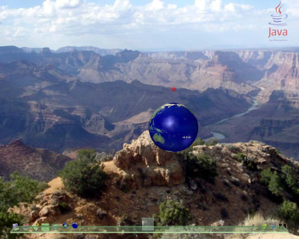

This tutorial is based upon the tutorial written by Hideya Kawahara.
| Aim: | To demonstrate more complex manipulations and user interaction with a 3D application within the lg3d framework. We will create a sphere with the Earth texture and a small handle to move it. |
|---|---|
| Requirements: | This tutorial builds upon Tutorial 1 and Tutorial 2. To use this tutorial you will need a functional installation of the of lg3d. The stable version is the best version to begin with. This version is located at the lg3d-core web site. Follow the "Getting started with Project Looking Glass" link for installation instructions. Note: You do not need to run the lg3d-session version. |
| Additionally, you need to have the Java 1.5 SDK. This is available at the Sun Java web site. | |
| Steps: | |
| Step 1: | Initialize the 3D application |
| Just like in Tutorial 1 the first step is to create a Frame3D. | |
Frame3D frame3d = new Frame3D(); |
|
| Step 2: | Create a textured sphere |
|
The SimpleAppearance class provides a
useful constructor that takes the location of a texture to load. The appearance parameters are initialized to reasonable values which work fine for most of cases. If you are interested in a more detailed configuration, you can find out more by looking at the API documentation for Appearance, Material and Texture. |
|
SimpleAppearance earthApp = null; |
|
| Now we can create the sphere using this textured appearance. Be sure to specify Primitive.GENERATE_TEXTURE_COORDS so that the texture coordinates will be generated along with the position coordinates. | |
Sphere earth = new Sphere(0.03f,
Primitive.GENERATE_NORMALS | Primitive.GENERATE_TEXTURE_COORDS | Primitive.GEOMETRY_NOT_SHARED,36, earthApp); |
|
| Now the sphere can be added to a Component3D, set it's position, and set the cursor for it. Note we can set a cursor for each Component3D, and in this
example, we use one of the predefined cursors,
Cursor3D.E_RESIZE_CURSOR.
|
|
Component3D earthComp = new Component3D(); |
|
| Step 3: | Setup some simple behaviors for the earth |
|
A number of actions are provided by the API. I suggest having a look through the org.jdesktop.lg3d.utils.action, org.jdesktop.lg3d.utils.actionadapter and org.jdesktop.lg3d.utils.eventadapter packages. For this tutorial we will be implementing a RotateActionBoolean,
a ScaleActionBoolean and a GenericEventPostAction. The |
|
earthComp.addListener(new MouseEnteredEventAdapter(
new ScaleActionBoolean(earthComp, 1.1f))); |
|
Here is a simple usage example of a simple action adapter,
ToggleAdapter.
It converts ActionNoArg interface to
ActionBoolean interface by toggling the state for the call
to performAction() method of the ActionBoolean interface
everytime incoming ActionNoArg's performAction() gets invoked.
Don't forget to set the rotation axis.
Note that RotateActionBoolean takes the third argument that
specifies the duration of its action. This overrides the
default duration specified in the constructor of
NaturalMotionAnimation.
|
|
earthComp.setRotationAxis(0.0f, 1.0f, 0.0f);new MouseClickedEventAdapter(
new ToggleAdapter(
new RotateActionBoolean(earthComp, (float)Math.PI, 1000))));frame3d.addChild(earthComp); |
|
| Step 4: | Controling default scenemanager behavior |
| To demonstrate a more involved example on how to control which component the default scenemanager behavior happens, we will add a handle to the earth. | |
SimpleAppearance handleApp = new SimpleAppearance(1.0f, 0.0f, 0.0f, 0.5f);
new MouseEnteredEventAdapter(
new ScaleActionBoolean(handleComp, 1.5f))); |
|
|
Now we have two parts for this application, 'earthComp'
and 'handleComp'. Since we have registered event adapters
with the both of the components, all the mouse events posted
to this application will be consumed and no mouse event is
passed to the SceneManager. Let's make the handleComp component the handle for the user to aid in dragging the earth about. In order to do it, we need to set the flag that allows mouse event propagation for the handleComp object. In that way, mouse events get propagated to the SceneManager and it performs the default behavior agianst the 'handleComp' that allows the user to grab it and move the application. Note that, in contrast, mouse events posted against the earthComp object are still consumed and there is no default SceneManager action taken against this object. |
|
handleComp.setMouseEventPropagatable(true); |
|
| Step 5: | Initialize the container |
| Finally, we can add the frame to the container and initialize it to make it visible, as described in Tutorial 1 step 4. Note, since the sphere has different dimension and has been rotated and scaled, a large hint size (preferred size) should be given to the SceneManager to avoid conflicts with other 3D applications. | |
frame3d.setPreferredSize(new Vector3f(0.06f, 0.10f, 0.08f)); |
|
| Step 6: | Compile the code |
|
We have finished writing the code. The full version includes the required import statements, and various constructor and main methods. Download Tutorial3.java. Additionally you need the earth texture image. Download earth.jpg - note this needs to be in the same directory as the application is run from (the same directory as the class file if you follow these instructions). Now we need to compile the source file. The tutorial requires the lg3d core library and Java 1.5 to compile. The core library can be found under the lib directory of the lg3d distribution (replace $LG3DHOME with the path to the lg3d distribution).
|
|
|
|
| Step 7: | Run our application |
| To run the tutorial, simply execute the runtutorial script with the name of the class file (without the .class extension) | |
./runtutorial Tutorial3 |
|
| The lg3d desktop should be displayed with the earth textured sphere centered as you see below. The handle should be visible and can be grabbed allowing movement of the sphere. | |
|  | |
{kind=link}